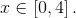
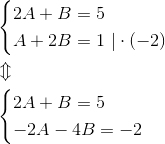
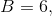
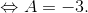

Calculul integralelor unor funcții raționale oarecare
În secțiunea Polinoame ireductibile. Descompunerea polinoamelor în factori ireductibili, din cadrul ghidului Polinoame, avem că în mulțimea a polinoamelor cu coeficienți reali, singurele polinoame ireductibile peste corpul sunt polinoamele de forma și cu și
Următorul rezultat ne ajută să scriem o funcție rațională ca o sumă algebrică de funcții raționale simple pentru care calculul integralelor acestora a fost studiat anterior.
Teorema CI42: Descompunerea unei funcții raționale în sumă finită de funcții raționale simple
Fie funcția rațională unde oricare ar fi
Dacă numitorul este de forma:

unde atunci  se scrie în mod unic sub forma:
se scrie în mod unic sub forma:
unde este o funcție polinomială.
Cum se aplică această teoremă?
Pentru descompunerea unei funcții raționale în sumă finită de funcții raționale simple se urmează algoritmul următor:
- Se efectuează împărțirea cu rest a polinoamelor dacă rezultând relația cu și
- Pentru se folosește formula de descompunere în sumă finită de funții raționale simple conform teoremei anterioare, unde coeficienții urmează a fi determinați.
- În egalitatea obținută la punctul anterior se elimină numitorul comun și se ajunge astfel la o egalitate de funcții polinomiale.
- Din egalitatea funcțiilor polinomiale se obține un sistem de ecuații în care necunoscutele sunt coeficienții .
Această metodă de determinare a coeficienților se numește metoda coeficienților nedeterminați.
În funcție de natura numitorului distingem următoarele patru cazuri, care îți sunt demonstrate prin exercițiile rezolvate:
Numitorul are rădăcini reale simple
Exercițiu rezolvat:
Să se calculeze următoarele integrale:
Rezolvare:
- Fie funcția rațională
Conform Teoremei CI42: ( Descompunerea unei funcții raționale în sumă finită de funcții raționale simple ) funcția  are următoarea scriere ca sumă de funcții raționale simple:
are următoarea scriere ca sumă de funcții raționale simple:
cu 
Eliminăm numitorul comun al ecuațiilor și obținem:
Identificăm coeficienții expresiilor polinomiale din ultima egalitate obținută. În figura următoare ți se va arăta, prin subliniere, coeficienții care ajută la formarea sistemului de ecuații, în urma căruia aflăm necunoscutele  și
și  :
:

Sistemul care se formează este:

De unde, prin adunarea celor două ecuații obținem că:
Înlocuind în prima ecuație a sistemului, aflăm că:
Atunci, funcția se scrie astfel:
cu
Obținem că integrala dată este egală cu:
![\begin{align*} I_1&=\int_{0}^{4}\frac{5x+1}{(x+2)(2x+1)}\ \mathrm{dx}\\\\ &=\int_{0}^{4} \left ( \frac{3}{x+2}+\frac{-1}{2x+1} \right )\ \mathrm{dx}\\\\ &=3\int_{0}^{4}\frac{1}{x+2}\ \mathrm{dx}-\frac{1}{2}\int_{0}^{4} \frac{2}{2x+1}\ \mathrm{dx}\\\\ &=3\ln\left | x+2 \right |\Big|_0^4-\frac{1}{2}\ln\left |2x+1 \right |\Big|_0^4\\\\ &=3\cdot \left ( \ln\left | 4+2 \right | -\ln\left | 0+2 \right |\right )-\frac{1}{2}\cdot \left ( \ln\left | 2\cdot 4+1 \right |- \ln\left | 2\cdot 0+1 \right |\right )\\\\ &=3(\ln6-\ln2)-\frac{1}{2}(\ln9-\ln1)\\\\ &=3\cdot \ln\frac{6}{2}-\frac{1}{2}\cdot \ln\frac{9}{1}\\\\ &=3\ln3-\frac{1}{2}\ln9\\\\ &=3\ln3-\dfrac{1}{2}\ln 3^2\\\\ &=3\ln3-\dfrac{1}{2}\cdot 2\ln 3\\\\ &=3\ln 3-\ln 3\\\\ &=2\ln3 \end{align*}](../../../media/webbooks/404/2815/images/equations/wvd-s7dzn8ltvgbwb7cvlg==.svg)
- Fie funcția rațională
Se observă că gradul numărătorului este mai mare decât gradul numitorului.
Aplicând algoritmul de împărțire a două polinoame și teorema împărțirii cu rest (noțiuni pe care le găsești accesând ghidul Polinoame) se obține că:

Adică funcția se scrie astfel:
Ne rămâne să scriem ca sumă de funcții raționale simple funcția:
Avem că:
Conform Teoremei CI42: Descompunerea unei funcții raționale în sumă finită de funcții raționale simple se obține:
Eliminăm numitorul și efectuăm calculele:
Identificăm coeficienții (asemenea exemplului anterior) și obținem următorul sistem:

Am obținut că  de unde îl putem obține pe , ca fiind egal cu:

Atunci avem:
Funcția  se scrie astfel:
se scrie astfel:
Acum, având toate aceste calcule, putem calcula integrala dată:
![\begin{align*} I_2&=\int_{-1}^{0}\frac{x^3-3x^2+5x}{x^2-3x+2}\ \mathrm{dx}\\\\&=\int_{-1}^{0}\left ( x+\frac{-3}{x-1}+\frac{6}{x-2} \right )\ \mathrm{dx}\\\\&=\int_{-1}^{0}x\ \mathrm{dx}-3\int_{-1}^{0}\frac{3}{x-1}\ \mathrm{dx}+6\int_{-1}^{0}\frac{1}{x-2}\ \mathrm{dx}\\\\&=\frac{x^2}{2}\Big|_{-1}^{0}-3\ln\left | x-1 \right |\Big|_{-1}^{0}+6\ln\left | x-2 \right |\Big|_{-1}^{0}\\\\&=\frac{0^2}{2}-\frac{(-1)^2}{2}-3\left ( \ln\left | 0-1 \right | -\ln\left | -1-1 \right | \right )+6\left ( \ln\left | 0-2 \right | -\ln\left | -1-2 \right | \right )\\\\&=-\frac{1}{2}-3\left ( \ln\left | -1 \right |-\ln\left | -2 \right | \right )+6\left ( \ln\left | -2 \right |-\ln\left | -3 \right | \right )\\\\&=-\frac{1}{2}-3(\ln1-\ln2)+6(\ln2-\ln3)\\\\&=-\frac{1}{2}-3(0-\ln2)+6\ln2-6\ln3)\\\\&=-\frac{1}{2}+3\ln2+6\ln2-6\ln3\\\\&=-\frac{1}{2}+9\ln2-6\ln3\end{align*}](../../../media/webbooks/404/2815/images/equations/u83yfadsadaxetekzurvbg==.gif)
Numitorul are rădăcini reale multiple
Exercițiu rezolvat:
Să se calculeze integrala
Rezolvare:
Considerăm funcția
Aplicăm Teorema CI42: ( Descompunerea unei funcții raționale în sumă finită de funcții raționale simple ) și se obține:
Eliminăm numitorul și efectuăm calculele:

Identificăm coeficienții acelorași puteri ale lui din cei doi membri ai ultimei egalități la care am ajuns după efectuarea calculelor și formăm sistemul următor, pe care îl rezolvăm pornind de la ultima ecuație:
![\begin{align*} & \begin{cases} A+C=0\\ 2A+B+C+D=0\\ A+2B=2\\ B=1 \end{cases}\\\\ &\Leftrightarrow \begin{cases} A+C=0\\ 2A+B+C+D=0\\ A+2\cdot 1=2\\ B=1 \end{cases}\\\\ &\Leftrightarrow \begin{cases} A+C=0\\ 2A+B+C+D=0\\ A=2-2\\ B=1 \end{cases}\\\\ &\Leftrightarrow \begin{cases} A+C=0\\ 2A+B+C+D=0\\ A=0\\ B=1 \end{cases}\\ \\&\Leftrightarrow \begin{cases} 0+C=0\\ 2\cdot 0+1+C+D=0\\ A=0\\ B=1 \end{cases}\\\\ &\Leftrightarrow \begin{cases} C=0\\ D=0-1\\ A=0\\ B=1 \end{cases}\\\\ &\Leftrightarrow \begin{cases} C=0\\D=-1\\ A=0\\ B=1 \end{cases} \end{align*}](../../../media/webbooks/404/2815/images/equations/vwcviv41worltnyhzkzl2w==.gif)
Astfel, am obținut că:
În acest caz, integrala noastră devine:
![\begin{align*} I&=\int_{1}^{2}\frac{2x+1}{x^2(x+1)^2}\ \mathrm{dx}\\\\&=\int_{1}^{2}\left (\frac{1}{x^2}-\frac{1}{(x+1)^2}\right )\mathrm{dx}\\\\&=\int_{1}^{2}\frac{1}{x^2}\ \mathrm{dx}-\int_{1}^{2}\frac{1}{(x+1)^2}\ \mathrm{dx}\\\\&=\int_{1}^{2}x^{-2}\ \mathrm{dx}-\int_{1}^{2}(x+1)^{-2}\ \mathrm{dx}\\\\&= \frac{x^{-2+1}}{-2+1}\ \Big|_{1}^{2}-\frac{(x+1)^{-2+1}}{-2+1}\ \Big|_{1}^{2}\\\\&=\frac{x^{-1}}{-1}\ \Big|_{1}^{2}-\frac{(x+1)^{-1}}{-1}\ \Big|_{1}^{2}\\\\&=-\frac{1}{x}\ \Big|_{1}^{2}+\frac{1}{x+1}\ \Big|_{1}^{2}\\\\&=-\left ( \frac{1}{2}-\frac{1}{1} \right )+\left ( \frac{1}{2+1}-\frac{1}{1+1} \right )\\\\&=-\frac{1}{2}+1+\frac{1}{3}-\frac{1}{2}\\\\&=\frac{-1-1}{2}+1+\frac{1}{3}\\\\&=\frac{-2}{2}+1+\frac{1}{3}\\\\&=-1+1+\frac{1}{3}\\\\&=\frac{1}{3} \end{align*}](../../../media/webbooks/404/2815/images/equations/hw1em-3oiehfxmgvgx2izq==.gif)
Numitorul are rădăcini complexe simple
Exercițiu rezolvat:
Să se determine integrala funcției
Rezolvare:
Aplicăm Teorema CI42: ( Descompunerea unei funcții raționale în sumă finită de funcții raționale simple ) și obținem:
Aplicând metoda coeficienților nedeterminați obținem:


Identificăm coeficienții acelorași puteri ale lui din cei doi membri ai ultimei egalități la care am ajuns după efectuarea calculelor și formăm sistemul următor:
Atunci funcția se scrie astfel:
Având acestea, putem calcula integrala funcției date:
Luăm separat și calculăm cele două integrale. Avem:
![\begin{align*} I_2&=\int_{1}^{\sqrt{e}}\frac{x}{x^2+1}\ \mathrm{dx}\\\\&=\frac{1}{2}\int_{1}^{\sqrt{e}}\frac{2x}{x^2+1}\ \mathrm{dx}\\\\&=\frac{1}{2}\int_{1}^{\sqrt{e}}\frac{{(x^2+1)}'}{x^2+1}\ \mathrm{dx}\\\\&=\frac{1}{2}\int_{1}^{\sqrt{e}}\frac{{u}'(x)}{u(x)}\ \mathrm{dx}\\\\&=\frac{1}{2}\int_{u(1)}^{u(\sqrt{e})}\frac{1}{t}\ \mathrm{dt}\\\\&=\frac{1}{2}\int_{2}^{e+1}\frac{1}{t}\ \mathrm{dt}\\\\&=\frac{1}{2}\cdot \ln\left | t \right |\Big|_{2}^{e+1}\\\\&=\frac{1}{2}\left ( \ln\left | e+1 \right |-\ln\left | 2 \right | \right )\\\\&=\frac{1}{2}\left [ \ln(e+1)-\ln2 \right ]\\\\&=\frac{1}{2}\cdot \ln\frac{e+1}{2} \end{align*}](../../../media/webbooks/404/2815/images/equations/y1c7argdagnt6gkcpo5iiw==.gif)
Atunci, integrala noastră este egală cu:
Numitorul are rădăcini complexe multiple
Exercițiu rezolvat:
Să se calculeze integrala
Rezolvare:
Fie funcția
Aplicând Teorema CI42: ( Descompunerea unei funcții raționale în sumă finită de funcții raționale simple ) se obține:
Aplicăm metoda coeficienților nedeterminați și se obține:
Identificăm coeficienții acelorași puteri ale lui din cei doi membri ai ultimei egalități la care am ajuns după efectuarea calculelor și rezolvăm următorul sistem:
Scriem funcția astfel:
Având toate aceste calcule, putem calcula integrala dată:
Calculăm separat cele două integrale:
![\begin{align*}I_1&=\int_{0}^{\sqrt{2}} \frac{1}{x^2+6}\ \mathrm{dx}\\\\&= \int_{0}^{\sqrt{2}} \frac{1}{x^2+\left (\sqrt{6} \right )^2}\ \mathrm{dx}\\\\&=\frac{1}{\sqrt{6}}\cdot arctg\ \frac{x}{\sqrt{6}}\ \Big|_{0}^{\sqrt{2}}\\\\&=\frac{1}{\sqrt{6}}\left ( arctg\ \frac{\sqrt{2}}{\sqrt{6}}-arctg\ \frac{0}{\sqrt{6}} \right )\\\\&=\frac{1}{\sqrt{6}}\left ( arctg\ \frac{1}{\sqrt{3}} - arctg\ 0 \right )\\\\&=\frac{1}{\sqrt{6}}\left ( arctg\ \frac{\sqrt{3}}{3}-0 \right )\\\\&=\frac{1}{\sqrt{6}}\cdot \frac{\pi}{6}\\\\&=\frac{\sqrt{6}}{6}\cdot \frac{\pi}{6}\\\\&=\frac{\sqrt{6}\pi}{36} \end{align*}](../../../media/webbooks/404/2815/images/equations/g0xmw9iednohzt5nhnvzpq==.gif)
![\begin{align*} I_2&=\int_{0}^{\sqrt{2}} \frac{x}{(x^2+6)^2}\ \mathrm{dx}\\\\&=\frac{1}{2}\int_{0}^{\sqrt{2}} \frac{2x}{(x^2+6)^2}\ \mathrm{dx}\\\\&=\frac{1}{2}\int_{0}^{\sqrt{2}} \frac{{(x^2+6)}'}{(x^2+6)^2}\ \mathrm{dx}\\\\&=\frac{1}{2}\int_{0}^{\sqrt{2}} \frac{u'(x)}{u^2(x)}\ \mathrm{dx}\\\\&=\frac{1}{2}\int_{0}^{\sqrt{2}}u'(x)\cdot u^{-2}(x)\ \mathrm{dx}\\\\&=\frac{1}{2}\int_{u(0)}^{u(\sqrt{2})}t^{-2}\ \mathrm{dt}\\\\&=\frac{1}{2}\int_{6}^{8}t^{-2}\ \mathrm{dt}\\\\&=\frac{1}{2}\cdot \frac{t^{-2+1}}{-2+1}\ \Big|_{6}^{8}\\\\&=\frac{1}{2}\cdot \frac{t^{-1}}{-1}\ \Big|_{6}^{8}\\\\&=-\frac{1}{2}\cdot \frac{1}{t}\ \Big|_{6}^{8}\\\\&=-\frac{1}{2}\left ( \frac{1}{8}-\frac{1}{6} \right )\\\\&=-\frac{1}{2}\cdot \frac{3-4}{24}\\\\&=-\frac{1}{2}\cdot\left ( -\frac{1}{24} \right )\\\\&=\frac{1}{48} \end{align*}](../../../media/webbooks/404/2815/images/equations/oo8gvxlk8ayf4hjmvz_d2a==.gif)
Revenind la calcularea integralei inițiale, obținem: